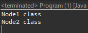
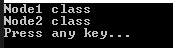

[Design pattern] 2-6. プロキシパターン(Proxy pattern)
こんにちは。明月です。
この投稿はデザインパターンのプロキシパターン(Proxy pattern)に関する説明です。
プロキシパターンはデコレーターパターンと似ているな構造を構成していますが、デコレータパターンは継承したインターフェースでコンストラクタから同じインターフェースを継承したインスタンスを受け取って内容を追加する内容なら、プロキシパターンは継承したインターフェースでクラス内部で同じインターフェースを継承したインスタンスを生成するパターンです。

Reference - https://en.wikipedia.org/wiki/Proxy_pattern
#pragma once
#include <stdio.h>
#include <iostream>
using namespace std;
// INode インターフェース
class INode {
public:
// 抽象関数
virtual void print() = 0;
virtual ~INode() {};
};
// INodeを継承したNodeクラス
class Node : public INode {
public:
// 関数再定義
virtual void print() {
// コンソールに出力
cout << "Node Class" << endl;
}
};
// Proxyクラス
class NodeProxy : public INode {
private:
// メンバー変数
INode* node;
public:
// コンストラクタ
NodeProxy() {
node = new Node();
}
// デストラクタ
~NodeProxy() {
delete node;
}
// 関数再定義
virtual void print() {
// Nodeインスタンスのprint関数呼び出す。
node->print();
}
};
// 実行関数
int main() {
// インスタンス生成
INode* node = new NodeProxy();
// 関数呼び出し
node->print();
// メモリ解除
delete node;
return 0;
}
上の構造がプロキシパターンの基本構造です。NodeProxyクラスのコンストラクタからINodeインターフェースを継承したNodeクラスのインスタンスを生成します。そしてprint関数にはNodeインスタンスのprint関数を呼び出します。
普通はNodeクラスをNodeProxyクラスのインラインクラスに作成する場合もあります。
上みたいになぜこのように作成するかと思われますね。ただ、Proxyクラスではなく、Nodeクラスのインスタンスを生成すればよいのに。。
// インターフェース
interface INode {
// 抽象メソッド
void print();
}
// INodeを継承したNode1クラス
class Node1 implements INode {
// 関数再定義
public void print() {
// コンソールに出力
System.out.println("Node1 class");
}
}
// INodeを継承したNode2クラス
class Node2 implements INode {
// 関数再定義
public void print() {
// コンソールに出力
System.out.println("Node2 class");
}
}
// Proxyパターンクラス
class NodeProxy implements INode {
// メンバー変数
private INode node;
// コンストラクタ - パラメータがなければtrue
public NodeProxy() {
this(true);
}
// コンストラクタ
public NodeProxy(boolean check) {
// パラメータcheckにより生成するインスタンスが違う。
if (check) {
// Node1インスタンス生成
node = new Node1();
} else {
// Node2インスタンス生成
node = new Node2();
}
}
// 関数再定義
public void print() {
// nodeインスタンスのprint関数実行
node.print();
}
}
// 実行クラス
class Program {
// 実行関数
public static void main(String[] args) {
// パラメータがないNodeProxyインスタンス生成
INode node = new NodeProxy();
// print関数呼び出し。
node.print();
// パラメータがfalseのNodeProxyインスタンス生成
node = new NodeProxy(false);
// print関数呼び出し。
node.print();
}
}

Proxyクラスのコンストラクタのパラメータにより内部のメンバー変数のINode nodeに生成されたインスタンスが違います。
つまり、パラメータやデータによりインスタンスを区分する時に使うパターンだということです。
using System;
// インターフェース
interface INode
{
// 抽象メソッド
void Print();
}
// Proxyパターンクラス
class NodeProxy : INode
{
// INodeを継承したNode1クラス
private class Node1 : INode
{
// 関数再定義
public void Print()
{
// コンソールに出力
Console.WriteLine("Node1 class");
}
}
// INodeを継承したNode2クラス
private class Node2 : INode
{
// 関数再定義
public void Print()
{
// コンソールに出力
Console.WriteLine("Node2 class");
}
}
// メンバー変数
private INode node;
private bool check;
// コンストラクタ
public NodeProxy(bool check = true)
{
this.check = check;
}
// 関数再定義
public void Print()
{
if(node == null)
{
// パラメータのcheckにより生成するインスタンスが違う。
if (check)
{
// Node1インスタンス生成
node = new Node1();
}
else
{
// Node2インスタンス生成
node = new Node2();
}
}
// nodeインスタンスのprint関数実行
node.Print();
}
}
// 実行クラス
class Program
{
// 実行関数
static void Main(String[] args)
{
// パラメータがないNodeProxyインスタンス生成
INode node = new NodeProxy();
// print関数呼び出し。
node.Print();
// パラメータがfalseのNodeProxyインスタンス生成
node = new NodeProxy(false);
// print関数呼び出す。
node.Print();
// 任意のキーを押してください
Console.WriteLine("Press any key...");
Console.ReadKey();
}
}

今回にはNode1クラスとNode2クラスをNodeProxyクラスのインラインクラスに作成しました。
そしてインスタンスをコンストラクタから生成することではなく、Print関数から生成します。つまり、もしNodeクラスが多いデータを持っていることやリソースを使うクラスなら、上みたいにコンストラクタではなく、関数を呼び出す時にインスタンスを生成することで性能を考えて設計することができる利点もあります。
私の考えはパターン構造としては生成パターンのファクトリーメソッドパターンとFlyweightパターン、デコレーターパターンをよく使う状況でプロキシパターンがよく使うかなと思うパターンですね。そうからかな、実際によく使うパターンではありません。
また、似ている構造でインターフェースを継承せずに、メンバー変数に様々のクラスのインスタンスを入れて使いますね。でも、仕様によりプロキシパターンがもっと最適な場合もあるので、仕様によりパターンを使ったら良いでしょう。
ここまでデザインパターンのプロキシパターン(Proxy pattern)に関する説明でした。
ご不明なところや間違いところがあればコメントしてください。
- [Design pattern] 3-6. ステートパターン(State pattern)2021/11/17 20:04:47
- [Design pattern] 3-5. メメントパターン(Memento pattern)2021/11/16 20:01:36
- [Design pattern] 3-4. イテレータパターン(Iterator pattern)2021/11/15 19:31:28
- [Design pattern] 3-3. コマンドパターン(Command pattern)2021/11/05 17:01:42
- [Design pattern] 3-2. 責任の連鎖パターン(Chain of responsibility pattern)2021/11/04 19:27:58
- [Design pattern] 3-1. ストラテジーパターン(Strategy pattern)2021/11/03 18:38:52
- [Design pattern] 2-7. ファサードパターン(Facade pattern)2021/11/02 19:32:31
- [Design pattern] 2-6. プロキシパターン(Proxy pattern)2021/11/01 19:42:44
- [Design pattern] 2-5. フライウェイトパターン(Flyweight pattern)2021/10/29 19:48:27
- [Design pattern] 2-4. デコレーターパターン(Decorator pattern)2021/10/28 20:11:13
- [Design pattern] 2-3. ブリッジパターン(Bridge pattern)2021/10/27 20:32:21
- [Design pattern] 2-2. コンポジットパターン(Composite pattern)2021/10/27 20:30:54
- [Design pattern] 2-1. アダプターパターン(Adapter pattern)2021/10/26 19:12:40
- [Design pattern] 1-5. プロトタイプパターン(Prototype pattern)2021/10/22 19:35:45
- [Design pattern] 1-4. デザインパターンの抽象ファクトリーパターン(Abstract factory pattern)2021/10/15 19:31:03
- [Java] 62. Spring bootでWeb-Filterを設定する方法(Spring Security)2022/03/15 22:16:37
- [Java] JWT(Json Web Token)を発行、確認する方法2022/03/14 19:12:58
- [Java] 61. Spring bootでRedisデータベースを利用してセッションクラスタリング設定する方法2022/03/01 18:20:52
- [Java] 60. Spring bootでApacheの連結とロードバランシングを設定する方法2022/02/28 18:45:48
- [Java] 59. Spring bootのJPAでEntityManagerを使い方2022/02/25 18:27:48
- [Java] 58. EclipseでSpring bootのJPAを設定する方法2022/02/23 18:11:10
- [Java] 57. EclipseでSpring bootを設定する方法2022/02/22 19:04:49
- [Python] Redisデータベースに接続して使い方2022/02/21 18:23:49
- [Java] Redisデータベースを接続して使い方(Jedisライブラリ)2022/02/16 18:13:17
- [C#] Redisのデータベースを接続して使い方2022/02/15 18:46:09
- [CentOS] Redisデータベースをインストールする方法とコマンドを使い方2022/02/14 18:33:07
- [Design pattern] 3-6. ステートパターン(State pattern)2021/11/17 20:04:47
- [Design pattern] 3-5. メメントパターン(Memento pattern)2021/11/16 20:01:36
- [Design pattern] 3-4. イテレータパターン(Iterator pattern)2021/11/15 19:31:28
- [CentOS] Linux環境(CentOS)でCassandra(NoSQL DB)をインストールする方法(DBeaverブラウザでNoSQL使い方)2021/11/12 17:33:58